Atomic Physics, Electronics, Electrodynamics, Quantum Information
Computational Physics, Quantum Mechanics, Solid State Physics
Machine Learning, Data Structures, Algorithms, Financial Engineering
My coursework spans Mathematics, Physics, Computer Science, and Finance.
Research Experience
Replacing Rb with Na for Sympathetic Cooling for Li,K
This is my internship research at the Center for Quantum Technologies (CQT)
at the National University of Singapore (NUS), under the supervision of Prof. Kai Dieckmann.
In our Fermi-Fermi dipole molecule system, we employed evaporative cooling on Rubidium (Rb) and
then used this pre-cooled Rb for sympathetic cooling of Lithium (Li) and Potassium (K) atoms.
This approach was necessary because the s-wave cross-section of fermions is zero so cannnot be used for
efficient evaporative cooling. We successfully produced a large sample of long-lived Feshbach molecules
of lithium and potassium. The next step is to load these molecules into an optical lattice, and our current work
focuses on measuring the magic wavelength for the rotational states of LiK molecules.
For more information, please visit Prof.Dieckmann's group website.
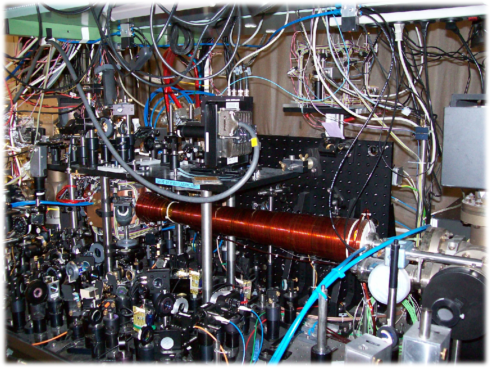
Photo of Lab Apparatus
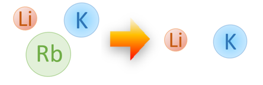
Cooling Scheme in our Current Experiment
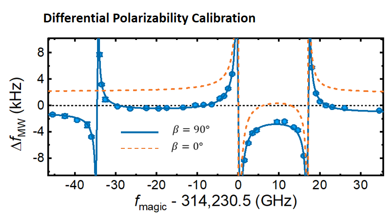
Magic Wavelength Measurement
My personal project investigates the feasibility of replacing Rubidium with Sodium
for sympathetic cooling. The primary motivation is twofold:
Sodium has a higher achievable atom number, and its mass is closer to that of Lithium and Potassium.
Consequently, the sympathetic cooling energy exchange rates for Na-Li and Na-K are significantly higher
than for Rb-Li and Rb-K. The underlying principle is illustrated as follows:
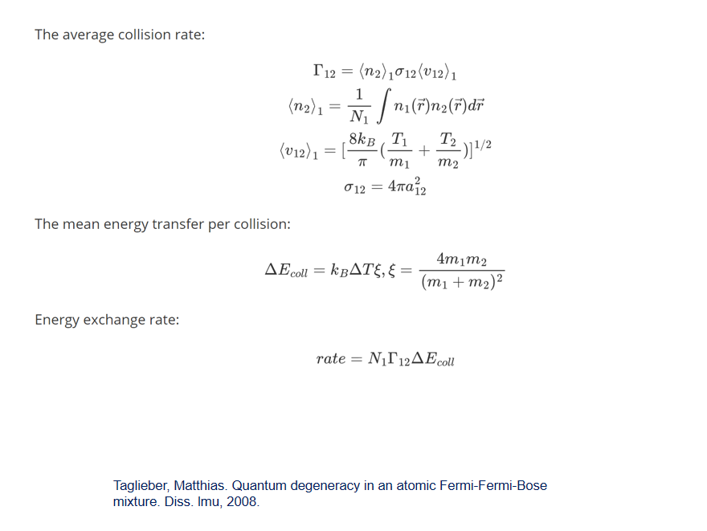
Principle of the Advantage
For uploading sodium, Zeeman slower is needed due to its light mass. The -400MHz detuned polarized laser and magnetic field from
-578G to 232G can cause a deceleration of 668m/s. This setup can slow down atomic beam efficiently and obtain large number of atoms in MOT.
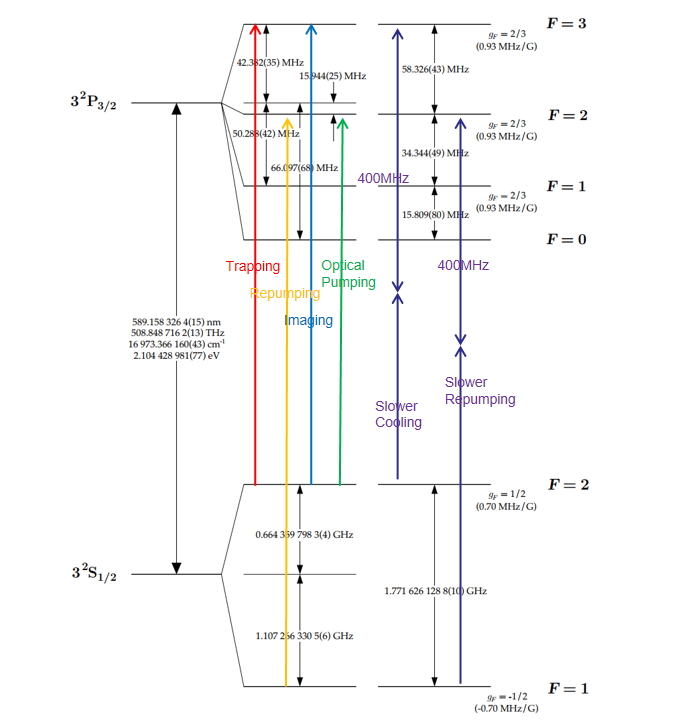
Energy structure of sodium and laser scheme
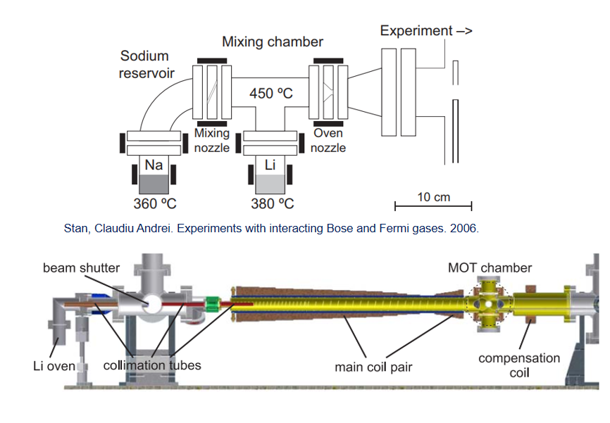
Sodium upload expirimental apparatusThe magnetic field in Zeeman slower
To create a 3D MOT for three different atomic species,
we needed to combine three laser beams of distinct wavelengths into a single beam.
A critical requirement for this setup was to ensure that after combining the beams,
the polarization of each wavelength could be
modulated accurately. This modulation was necessary to guarantee a 1:1 splitting ratio after a Polarizing Beam Splitter (PBS).
Using Jones matrix, I developed a program to solve this problem.
I subsequently built and successfully tested a practical setup to realize this solution.
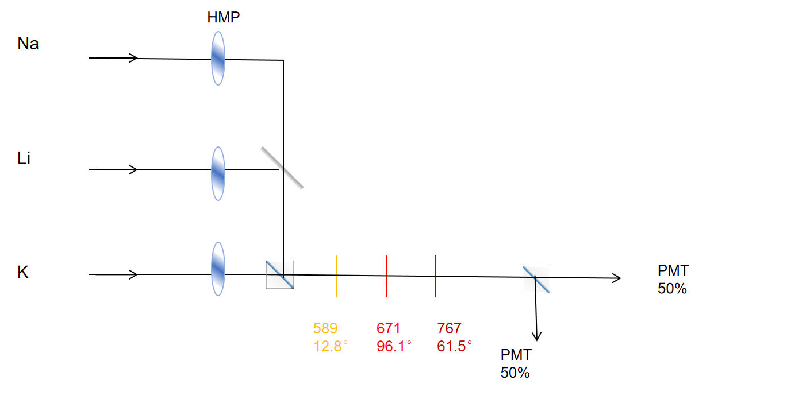
Test setup for combining 3 beams
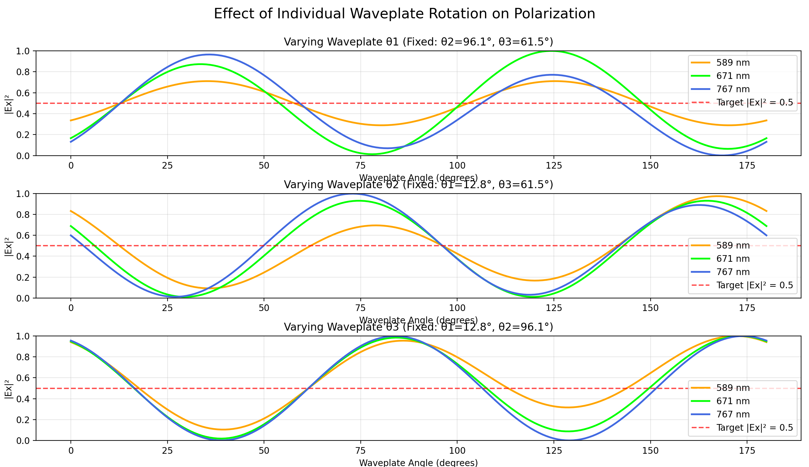
The trend of PBS splitting ratio related to angle.
This project is undergoing now. Recently I'm preparing the laser system consist of cooling, repumping, optical pumping, imaging,
Zeeman slower trapping and repumping.
Besides, I believe implementing a 2D MOT for transverse cooling of lithium and sodium could significantly reduce the atom beam loss rate...
High-power 780nm Rb Laser System with Seeder 1560nm ECDL
This is also my internship research at the Center for Quantum Technologies (CQT)
at the National University of Singapore (NUS), under the supervision of Prof. Kai Dieckmann.
In this project, I constructed laser system consisting of 1560nm ECDL seeder, Erbium-Doped Fiber Amplifier, SHG crystal and precise
intensity and frequency stabilization.
780nm Laser System
Firstly, I designed and constructed an External Cavity Diode Laser (ECDL) to serve as a seeder 1560nm for amplifier.
I developed the complete electronic control system, including laser diode(LD) current controller, a precision thermoelectric cooler (TEC)
controller for mK-level temperature stabilization, and a piezo-electric transducer (PZT) driver for grating adjustment.
I performed optical alignment of the laser diode, collimating aspheric lens, and diffraction grating. Achieved coarse wavelength
selection with an error of less than 1 nm, confirmed via a wavemeter.
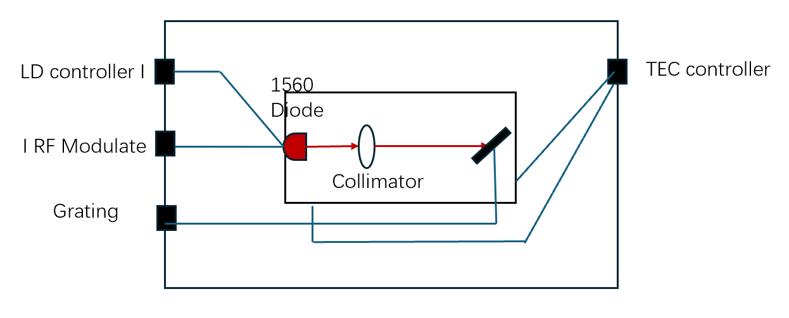
Seeder 1560nm ECDL LaserLaser Diode Circuit Design and ImplementationInvestigation of Ytterbium Atomic Light Shift and Rydberg State
This is a theorical internship research work, under the supervision of Prof. Peter Schauss.
This work presents a comprehensive theoretical and computational investigation into the atomic structure
of ytterbium (Yb) and its interaction with light fields,
crucial for precision quantum control. I derive a theoretical model for the ac Stark effect,
which underpins the calculation of light shifts vital for optimizing optical trapping parameters.
The study incorporates a robust framework that includes compiling empirical spectroscopic data,
developing a model potential approach for numerically solving the Schrödinger equation,
and implementing these calculations in Python. Furthermore, I explore
experimental methodologies for determining magic and tune-out wavelengths,
providing insights relevant to future experimental efforts.
The developed model is validated against known spectroscopic data,
laying a solid foundation for accurately predicting trapping potentials in Yb-based quantum optics
and quantum information experiments.
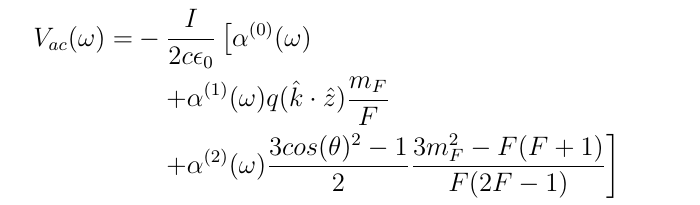
Energy shift caused by A.C. Stark effect.
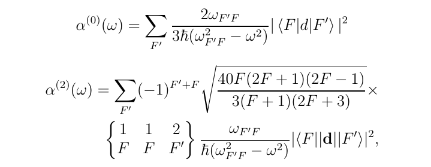
Polarizability shift caused by laser.
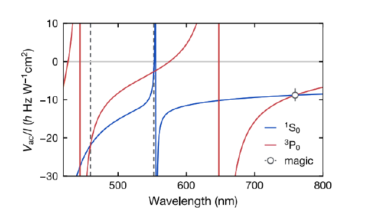
A.C. Stark map of the clock transition of Yb174.
I have concluded the foundational theoretical research and acquired experimental methodologies
for both magic wavelength characterization and tune-out wavelength identification. Concurrently,
I am developing a Python-based program for precise light shift and optical potential calculations.
Fluorescence Coupling with Multi-mode and Single-Mode Fiber Array in Ion Trap System
This is my own independent project in USTC, under the supervision of Prof.Yong Wan, in Prof.Jianwei Pan's group. This project aims to couple the fluorescence of a chain of ions to a fiber array.
Initially, I simulated the ion array fluorescence using a pinhole array and built an optical system consisting of a pinhole array, objective lens, tube lens, and fiber array.
I first imaged the pinhole array on the camera and calculated the magnification of the optical imaging system.
Then, I focused on coupling the fluorescence to a multimode fiber array and evaluating its efficiency.
In this project, I developed skills in optical path construction and adjustment.
I gained the ability to independently construct experimental platforms.
I also learned how to realize hardware-software integration.
Design drawing of pinhole array sample
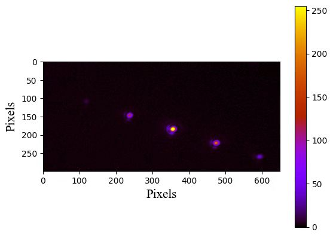
Imaging the pinhole array on the camera and calculating magnification
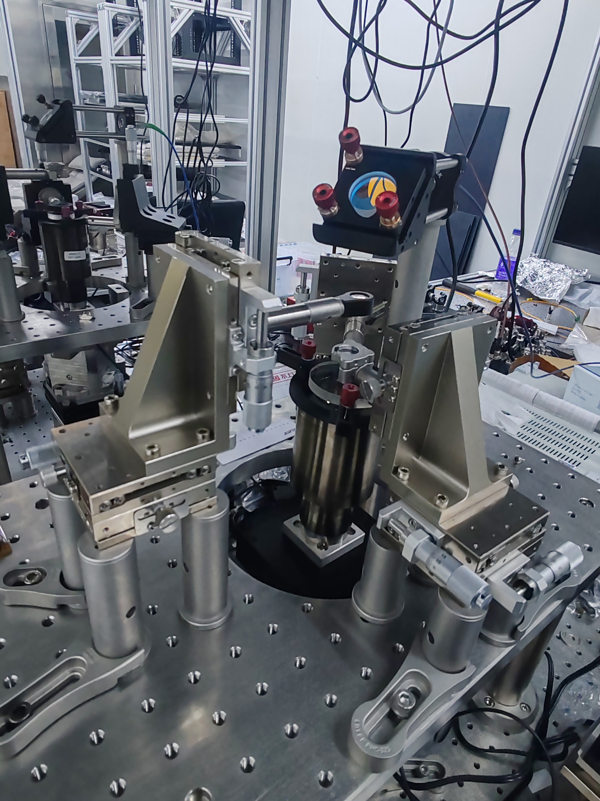
Optical components used for imaging the pinhole array
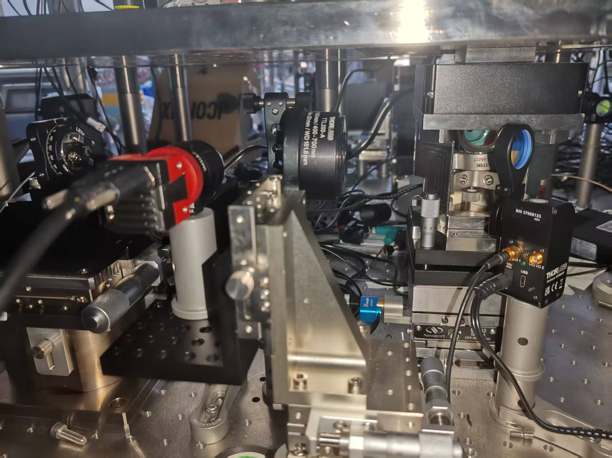
Apparatus for fluorescence coupling with fiber array and imaging
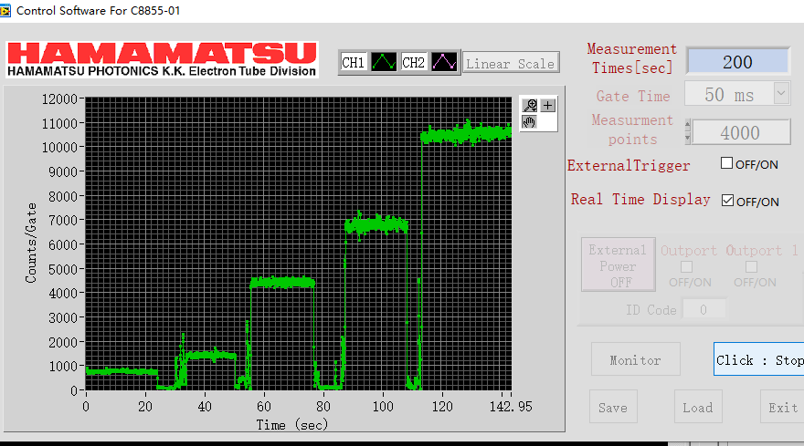
The data measured on PMT (Photonmultiplier Tube)
The imaging system operates at 393 nm fluorescence wavelength for calcium ion array coupling applications,
featuring a 0.6 NA objective. We aim to achieve ≥90% coupling efficiency through planned system optimizations by this December.
Optical Tweezer Technique
This is an experimental course offered by our school for students in the Quantum Information Talent Program.
In this project, I contributed to construct the optical path for measuring saturated absorption spectroscopy and laser cooling.
Additionally, I was responsible for conduct the research and development of real-time microsystems programming for quantum experiments.
I also designed and constructed the optical system for laser cooling, pumping and saturated absoption spectrum.
The design drawing of optical path for laser coolingThe design drawing of optical path for pumpingThe optical pathThe vacuum system
Awards and Honors
Undergraduate Outstanding Student Scholarship, awarded for academic performance in the top 15\% of the class (2023, 2024)
Taihu Future Technology Scholarship (2023, 2024)
Endeavour Fellowship, December 2023
Laboratory Skills
Design and construct optical imaging systems for quantum experiments.
Build laser systems for quantum state manipulation and precision control.
Develop programs to conduct sequential experiments and perform ion-based measurements.
Measure and analyze noise in laser frequency and phase stability.
Stabilize laser frequency and phase for reliable operation.
Design and implement optical tweezers systems for atomic manipulation.
Assisted in preparing and delivering lectures, assignments, and course materials.
Led weekly discussion sessions to clarify topics like atomic spectra and quantum transitions.
Graded assignments and exams, providing detailed feedback to help students improve.
Leadership and Activity
The Captain of Social Practice team- Investigating the inheritance and preservation of the intangible cultural heritage of Yi ethnic costumes in Yuni Yi ethnic township, Panzhou city, Liupanshui City, Guizhou province